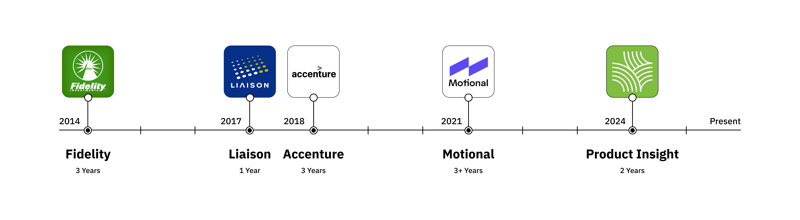
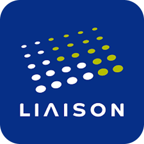
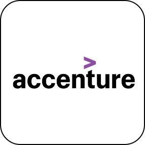
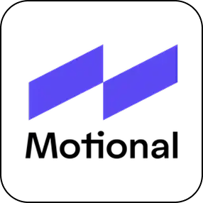
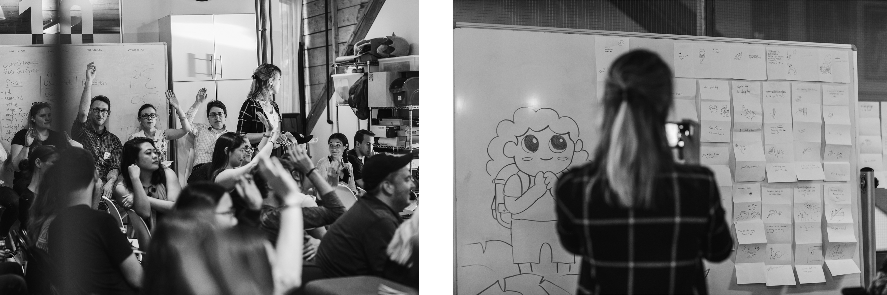
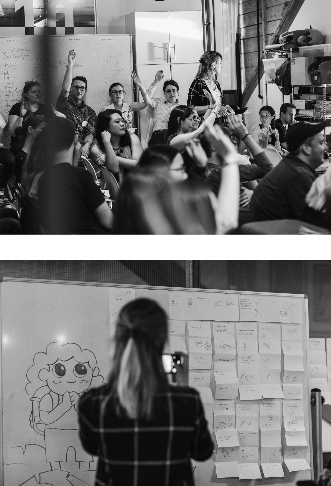
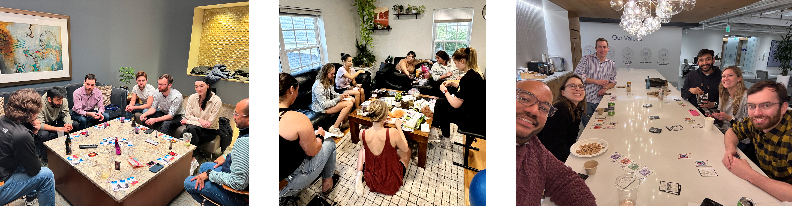
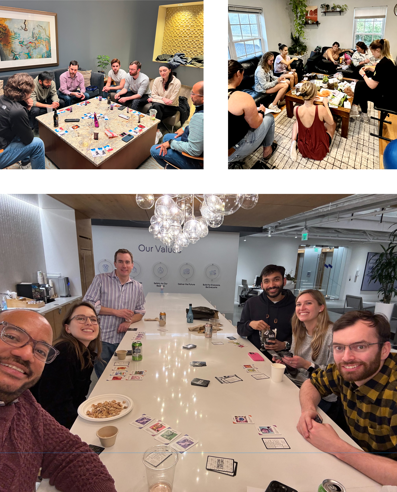
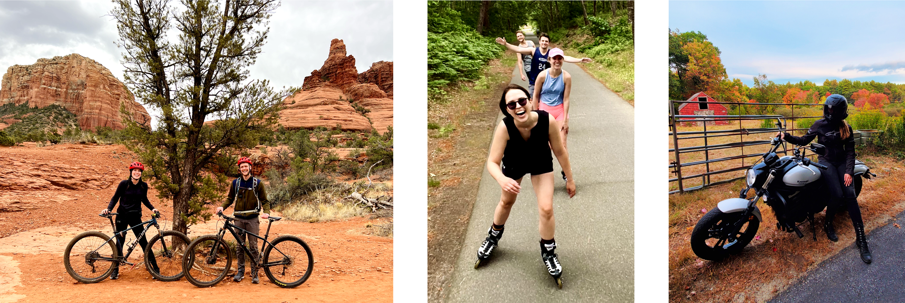
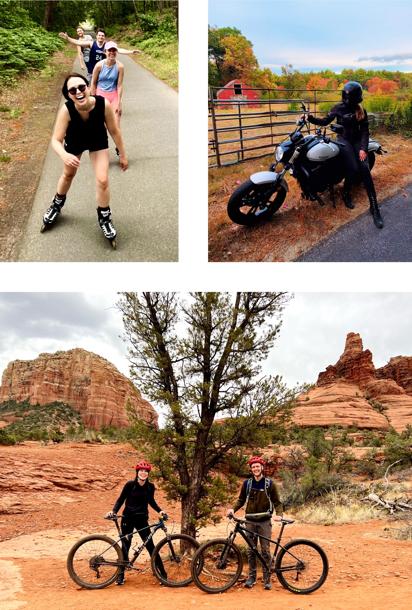

Hey there, I'm Julia
Product Designer with 10+ years of experience crafting end-to-end experiences across digital interfaces and real-world interactions.




Experience
At Product Insight, I lead the design of end-to-end product ecosystems that span digital interfaces, physical interactions, and automated robotic systems. I apply systems thinking and strategic clarity to define how complex technologies should work for real people—and partner closely with engineering to ensure they actually do.
At Motional, I helped define the future of autonomous vehicle operations. Working closely with Product, Engineering, and Operations, I redesigned the fleet monitoring platform (8× increase in users) and built new tools for remote vehicle operators, reducing vehicle downtime with 98% of cases resolved in under 45 seconds.
While consulting at Accenture I mentored junior designers through an apprentice program, co-hosted Practice Makes (a design meetup), and led design teams in designing accessible products across various industries:


Community & Leadership
Design Community
At Accenture, I was a co-host of Practice Makes, a bi-monthly design meetup connecting designers, artists and fostering community.
Company Culture
At Motional, I was part of the social committee, organizing and planning new company events. I also started hosting monthly board game nights at my past two companies and regularly host craft nights.


Continuous Learning
-
🤖
AI Tools for Design & Development — Experimenting with Cursor, Lovable, V0, Claude, ChatGPT, and other AI tools for UX research, design ideation, and development workflows
-
🎓
Leadership Essentials Certificate — Enrolled in a 4 month online course through Cornell University (eCornell) while working at Motional to become a stronger leader and mentor (2023).
-
💡
CLEAR Leadership Program — Selected to participate in Ali Levin's leadership and coaching program at Motional (2023).
-
👥
Management Training — Participated in a week-long in-person course at Motional (October 2022)
-
👩💻
New Programs — Recently learned ProtoPie for complex multi-device prototyping, continuing to learn Blender for 3D modeling.
-
💻
Front-End Development — HTML, CSS, JavaScript through One Month and General Assembly and have continued enhancing my skills with new frameworks and tools.
Outside of Work
I'm always up for a new adventure or learning something new. Here are a few of my favorite things to do:
- 🚴Biking
- 🛼Skating
- 🏍️Riding my motorcycle
- 🛴E-Scooting
- 🎶Going to Concerts
- 🧶Learning new crafts
- 🎲Board games
- 🎮Video games
- 🎬Watching thrillers
- 🎧Audiobooks
- 🎨Painting
- 🌱Gardening
- 🥗Plant-based cooking
- 🏋️Weightlifting
- 📷Photography
- 🗺️Planning trips


Let's Connect
If you're interested in collaborating or simply want to connect, don't hesitate to reach out!